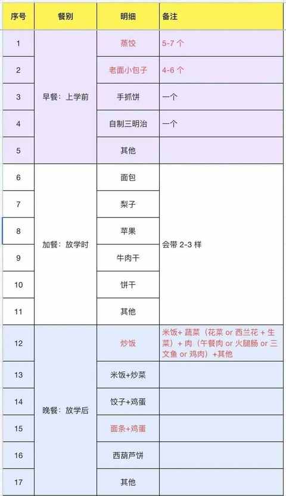
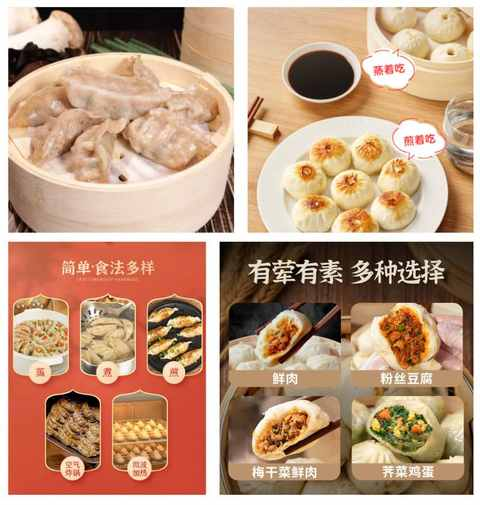
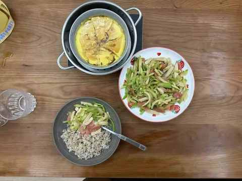

家有小学生，或许这 5 个 tips 能帮你搞定吃饭难题
作为居家办公的爸爸，承担着每天接送娃上下学及准备早餐和晚餐的重任。
接送很简单，但每天给娃吃什么以及怎么吃，在相当长一段时间里都是难题，有娃且是自己做饭的家长肯定会遇到下面的某个或多个情况：
① 不按套路出牌
明明做好了 A 食物，端上桌之后要吃 B，做好了 B 之后说要吃 C
② 早饭吃不好
早上起晚了，赶着去学校，没胃口，睡眼惺忪的出门啥也没吃
③ 零食占比偏高
日常会随口吃零食，到饭点不饿不吃饭，然后继续随机吃零食
④ 胃口大 或 过小
吃得多但活动量不够，然后学校体检后老师提醒超重
吃得少怕营养失衡，影响身体发育
⑤ 挑食
分两种： 一种是大部分食物都浅尝辄止，另一种是只吃特定的某些食物，不轻易尝试新东西，从而让食物种类摄入过于单一
……
好在现在二年级了，经过一年多的磨合，基本上摸清他的喜好，每天花很短的时间便能快速决策今天做什么吃的，分享 5 个 tips，希望能有用：
1️⃣ 少问娃想吃什么
小朋友的思维极度跳跃，说的话随时会忘掉。
问的时候是一个想法，吃的时候又是另一个，娃主动提的可考虑采纳。
2️⃣ 有固定搭配
下图是目前用的搭配：

常吃的食物就那些，周一到周五轮着来即可，周末再去做尝试新食材和搭配。

3️⃣ 平衡三大营养素
三大营养素分别是：
① 碳水：
易摄入过量，例如：特别喜欢多吃米饭、面条、馒头等同时不怎么吃菜
② 蛋白质：
易摄入不足，例如：肉蛋奶都不太喜欢吃，豆制品也吃得少从而导致抵抗力变低
③ 脂肪：
易摄入过量，例如：炸鸡和薯条的脂肪含量就挺高
相信在对三大营养素的基本认知之后，日常采购的过程中你也会养成查看配料表的习惯，从而在做饭的时候就能有更好的掌控感，各种食材的量也能逐渐精准控制。
4️⃣ 动起来
大人和小孩都要动起来，大人必须先动起来，这样才能带动小朋友多活动活动，不仅能让小朋友活动活动，也能开开胃。
例如：
上学：时间紧要借助交通工具
放学：步行去接再步行回家或者去哪里买点东西，也可以在小区里面玩一会儿
5️⃣ 多蒸煮
快速出餐的前提是：目标明确 + 熟练高
我的目标极其明确但熟练度不行，虽然现在的刀功依然是把菜切的粗细、大小、长短都不一样，但还是可以下咽的。

建议多蒸煮的缘由是在于能减少做饭的时间和精力投入，毕竟是每天都要重复的事情，不能太消耗自己且蒸煮也能保留食物本味。
有很多小事情要反复做，认真做，特别是做饭这件小事。
在做的过程中不断发现基本功的重要性：切菜、配菜、炒菜……
经过不断的实践与复盘调整，已经有了几个可喜的变化：
① 刚开始每周会点 1-2 次外卖到现在几乎不点外卖
② 多带娃活动之后身体没有幼儿园时候脆弱
③ 调整三大营养素的比例之后，虽然依然超重但无继续上升趋势
如果你也有吃饭方面的困扰，希望今天分享的 5 个 tips能帮助到大家。